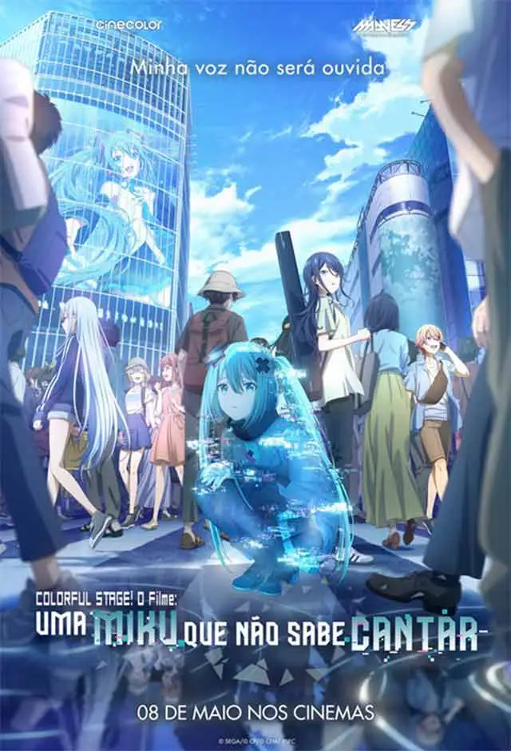

Uma Miku Que Não Sabe Cantar
Sinopse
Hatsune Miku, a icônica diva virtual, luta para compartilhar sua música com todos, mas algo não está funcionando.
Demon Slayer: Castelo Infinito
Sinopse
Japão, era Taisho. Tanjiro, um bondoso jovem que ganha a vida vendendo carvão, descobre que sua família foi massacrada por um demônio.

Uma Miku Que Não Sabe Cantar
Sinopse
Hatsune Miku, a icônica diva virtual, luta para compartilhar sua música com todos, mas algo não está funcionando. ...